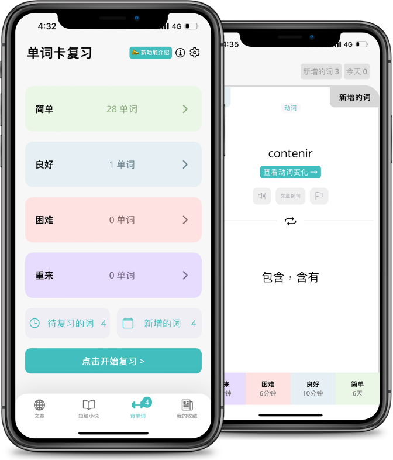

通勤学外语从三 App 到一条链：我怎么把 Langster 嵌进每日 30 分钟学习流程
以前每天学德语要三个 App 来回切、手动同步生词、周末补整理。现在 Langster 一条链搞定，少了两次手动复制、取消了周末任务、连续学习天数自动记。
我每天花大约 30 分钟学德语，时间全是从通勤地铁里抠出来的。以前这套流程散在三个地方：早上用 Anki 刷词汇卡，晚上用另一款阅读 App 读分级短文，周末再把一周遇到的生词手动复制进 Anki 做间隔重复。问题是链条上每个环节都要手动衔接——阅读 App 遇到的生词我得先记在便签里，再复制到 Anki，每篇故事 5~10 个生词就是 10~20 次粘贴，周末还要花半小时把遗漏的补进卡片组。而且经常读的时候没及时记，事后想不起来那个词在哪篇里出现过，就丢了。
后来把 Langster 插进来——这款从Langster官网就能拿到的分级故事工具——整条链从三 App 砍到一个，生词收集、间隔复习、进度追踪全在同一条线上自动跑。这不是说 Langster 包打天下——发音训练和系统语法书还是得配合别的工具——但它把我每天 80% 的学习环节串成了一条不用手动同步的流水线，省下来的时间和精力比我预想的多。
旧流程卡在哪
先说说旧流程的三个断点，这也是我一开始对单个学习 App 不信任的原因：
第一个断点是生词的收集和复习脱节。阅读 App 只管给你读，生词你自己记；Anki 只管给你复习，卡片你自己做。两者之间没有自动衔接，等于每遇到一个生词就要手动搬运两次——从阅读场景搬到记忆场景。这听起来不大，但一周下来就是两三百次重复操作，而且漏记率很高，因为地铁上低头读的时候很少停下来掏便签。
第二个断点是进度追踪不可靠。我以前靠日历打勾记"今天学了"，但德语有个特点：同样 30 分钟，有时候读了三篇短故事，有时候一篇精读都没读完。日历打勾只告诉我"花了时间"，没告诉我"学到了多少"。更要命的是，当某周中断了三天，重新开始的时候完全不记得上次停在哪个故事、哪些生词还没复习。
第三个断点是音频和文本分离。读故事的时候想同时听朗读，得切到另一个 App 或者手动点音频播放器，两边进度不同步。地铁上网络不好的时候音频加载不出来，又得手动下载，每个故事都单独存一遍很占空间。
新流程：Langster 插在三个环节中间
现在我的每日流程是这样的，从头到尾只开 Langster：
早上通勤（15 分钟）：打开 Langster，它自动推今天的新故事。Langster 每天会发布 3~5 篇经过语言专家改写的分级故事，覆盖不同难度级别，我设的是 CEFR B1 档，刚好是"略高于当前水平但能读懂"的 i+1 难度。遇到生词直接点一下，自动收集进词汇卡组，不用记便签，不用复制粘贴。读完了系统自动播母语者的全文朗读，我跟着听一遍，同时刚才点过的生词会在朗读过程中高亮，刚好是一次温和的复习。

下午间隙（5 分钟）：Langster 的通知会在我设的时间（下午 3 点）推一条词汇卡复习提醒。打开就是今天需要间隔重复的词汇——这个间隔是系统根据每个词我之前的记忆情况自动算的，不是固定 1 天、3 天、7 天那套死板间隔。每张卡片显示词、中文释义、出现过的故事片段，记不住就标记"再来一遍"，系统会缩短下次复习间隔。
晚上通勤（10 分钟）：再读一篇故事，和早上不同主题的——早上可能是科技新闻，晚上挑一篇文化类或日常对话。这篇故事里遇到的生词又会自动进词汇卡组，系统会自动安排它们在接下来几天的复习节奏里。读完 Langster 自动算"连续学习天数"，7 天、30 天这些节点会有成就提示，我现在连续 42 天了，这在以前三个 App 散用的时候是不敢想的——旧流程里只要某天忘了在日历打勾，连续性就断了。
实操细节：两个最容易断链的环节
流程听起来很顺，但实操中有两个地方最容易断，我踩过坑：
第一个环节：生词自动收集的覆盖盲区。Langster 点词即收藏，但有时候遇到的是词组、固定搭配或者俚语，系统拆不开——比如 "auf den Punkt bringen" 这个短语，点单个词收进去没用，得整个短语记。我的解法是用 Android 分屏模式：左边 Langster 读故事（这个版本从官方下载就能拿到），右边开德语词典 App，遇到短语就直接在词典里查，词典支持直接把词条保存回 Langster 的词汇卡组（Langster 有这个 API，我当初是翻了Langster文档才找到的），不用手动复制。这个分屏功能是 Android 版独有的，iOS 版目前没有这么灵活。
第二个环节：后台被杀导致音频中断。小米、华为、OPPO 这些国产 ROM 为了省电会杀后台，以前早上听完一篇故事锁屏后，中午回来发现 Langster 已经被干掉了，连续学习天数差点断。解决办法是把 Langster 加进系统设置的"不受省电影响"白名单，同时开启 Langster 设置里的"预下载"功能——连上 Wi-Fi 的时候自动缓存接下来 3 篇新故事的文本和音频，地铁上没信号也能离线读，不用等加载。缓存大小可以手动设，我设的 300MB，够用又不占太多空间。

效果和边界
说点实实在在的变化，不是"效率提升"这种空话：
手动复制生词的环节完全消失了——以前每篇故事 5~10 个生词，现在点一下就完事，每天省下来的时间大概是 3~5 分钟，一周就是 20~30 分钟。周末补整理的任务也取消了，因为词汇卡的间隔复习是 Langster 每天自动推的，不存在"攒到周末"的情况。连续学习天数自动记，我不用靠日历也不用担心断了之后的心理压力。
但这套流程不是万能的，有明确的边界：
发音训练得自己补。Langster 没有录音对比功能，也就是说它不会告诉你读得对不对。我用的方案是每天早上在 Langster 里选一段 10 秒的朗读片段，再打开专门的发音 App 录一遍，对比两个音频——这个环节还是两个 App，但好在发音训练每天只花 3~5 分钟，不会像以前那样每个环节都要手动衔接。
罕见语法点覆盖不到。Langster 的故事里不会出现特别生僻的语法结构（毕竟故事要追求可读性），比如德语的第二格定语从句、条件式 II 的各种变体，这些还得靠系统语法书单独啃。我的做法是每周日花 20 分钟翻一遍语法书，遇到对应的语法点在 Langster 里搜有没有相关故事，有的话标记重点读，没有就自己做一张语法卡手动加进词汇卡组。
主动参与度决定效果上限。Langster 这套流程的前提是你愿意点词、愿意标记"再来一遍"。如果只是被动滑故事、遇到生词直接跳过不查，那效果会打很大折扣。德国大学的研究里提到，Langster 组的学习效率比传统教材组高出一倍，但那个数据的前提是两组都花了相同时长——如果你每天只打开 Langster 但 30 分钟里只查了两个生词，那个"翻倍"和你没关系。
这套流程什么时候不划算
最后说句实在的：如果你每天能投入 1 小时以上的整段时间学外语，或者你已经有自己成熟的 App 组合并且在用，就没必要换。Langster 这条链的优势全在"碎片化 + 自动化"——通勤 30 分钟、不想动脑子手动同步、希望进度自己记。这些条件同时满足的时候它才真好用。
对我来说最明显的变化不是"学得多了"，而是"不用想怎么学了"。以前每天打开 App 之前要先想一遍"今天按什么顺序来"、"生词放哪"、"进度怎么记"，现在打开就读，读完听，听完系统自动推明天该复习的东西。脑子里省下来的那点精力，反而能更专注地读进去故事本身。这套分级故事库的完整文档和补充资料，我分别上传到了GitHub、Gitee、GitCode 三个仓库，防止单一平台访问受限。